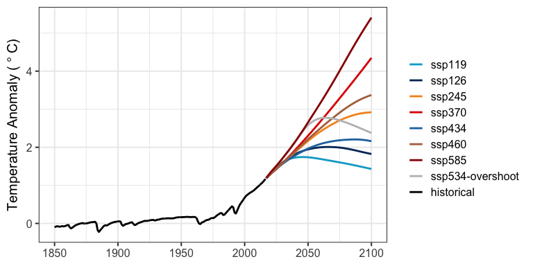

This is the repository for Hector, an open source, object-oriented, simple global climate carbon-cycle model that runs very quickly while still representing the most critical global scale earth system processes. Hector is a simple climate model (SCM, also known as a reduced-complexity climate model), a class of models that are extremely versatile with a wide range of applications. Due to their computational efficiency, SCMs can easily be coupled to other models and used to design scenarios, emulate more complex climate models, and conduct uncertainty analyses.

Hector’s output for global mean air temperature change for eight Shared Socioeconomic Pathways (SSPs).
Installation
The hector R package can be installed using the remotes::install_github function. More detailed installation instructions, including how to set up Hector as a command line executable, can be found here.
remotes::install_github('jgcri/hector')
library(hector)Contributing to Hector
The Hector team welcomes and values community contributions, but please see our Contribution Guide and note by contributing to this project, you agree to abide to our Contributor Code of Conduct
This research was supported by the U.S. Department of Energy, Office of Science, as part of research in Multi-Sector Dynamics, Earth and Environmental System Modeling Program. The Pacific Northwest National Laboratory is operated for DOE by Battelle Memorial Institute under contract DE-AC05-76RL01830.